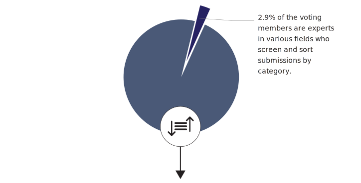
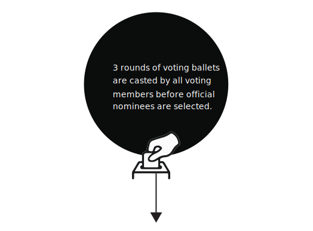
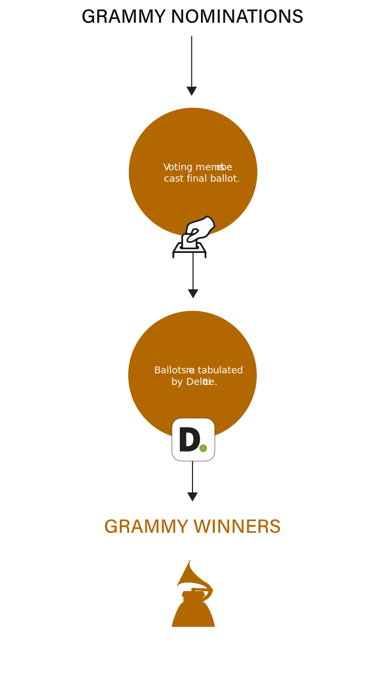

Hover for more information.
Around 350 experts in various fields out of over 12,000 voting members determine whether or not each entry is eligible and sort submissions into the 84 categories within 30 fields/genres.
Expertise is determined by what credits you have music on. (i.e. If you're a producer for a rock album and an R&B album, you are considered a rock and R&B expert).

Hover for more information.
Members can vote only in their area of expertise;
up to 15 of the Grammy Awards' categories, as well as in the four all-genre general
field categories (Record of the Year, Album of the Year, Song of the Year, Best New Artist).
